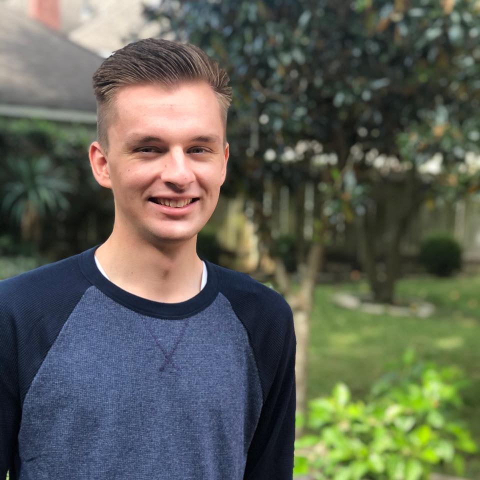

Turner Klippel
Mission Statement: My goal is to become a data scientist.
EDUCATION
Brigham Young University
- Bachelors Degree, Pre-Business | April 2025
- GPA 3.13/4.0
- Former BYU Marching Band member.
EXPERIENCE
Brigham Young University
Research Assisant
- Drafted detailed reports for funding opportunities for professors, doing 2-3 reports per week as needed
- Planned and executed events, hosting up to 150 people
- Designed flyers and advertisements for all events hosted
- Received basic training in web development for the Research Development Office website
SERVICE
The Church of Jesus Christ of Latter-day Saints
Volunteer Representative
- Served in various leadership positions over groups of volunteers, averaging from 6-20 volunteers
- Oversaw missionaries and aided those missionaries in helping others
- Communicated with several types of people in both English and the Portuguese language
- Learned how to create and pursue goals until achieved
SKILLS AND INTERESTS
- Microsoft Excel (Solver, Pivot Tables, Charts, Basic VBA knowledge), Microsoft Office Suite.
- Computer Troubleshooting.
- Basic experience in Python, JavaScript, and HTML
- Fluent in Portuguese.
- Enjoy listening to and playing all kinds of music. Piano and trombone player.